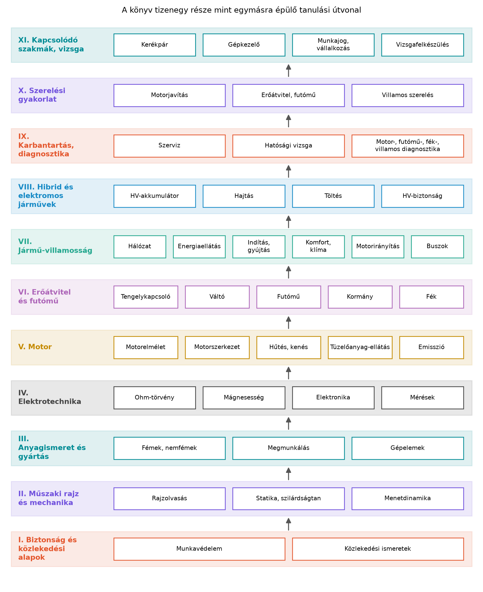
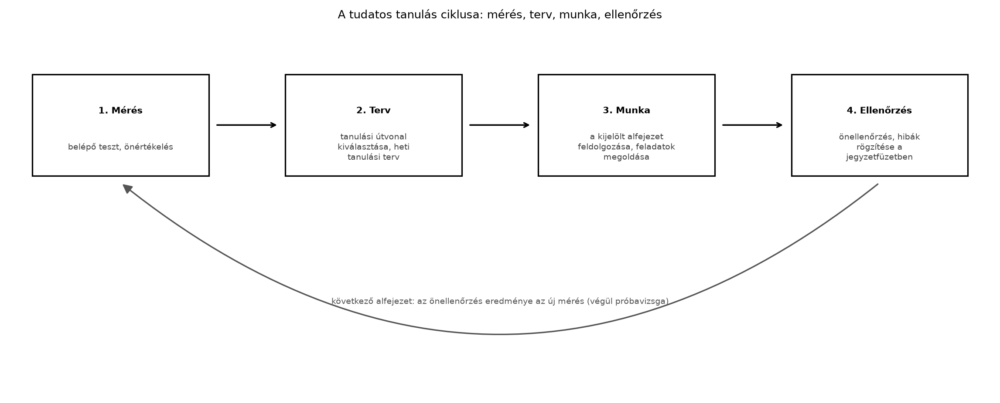
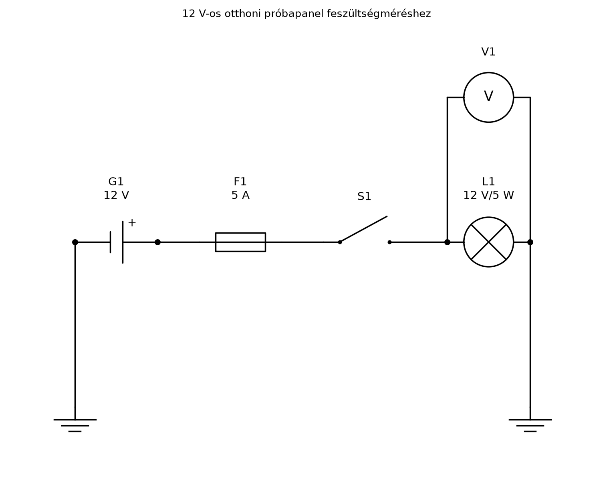

Képzeld el, hogy belépsz egy autószervizbe: az egyik állásban egy turbómotoros autó hibakódját olvassák ki, a másikban féktárcsát cserélnek, a harmadikban hibrid jármű nagyfeszültségű rendszerét készítik elő javításra. Az autószerelőnek mindezt értenie kell: nem elég különálló mondatokat megtanulni, a rendszerek összefüggnek. Ez a könyv azért készült, hogy ezt az összefüggő tudást az alapoktól felépítve, önállóan is elsajátítsd.
A könyv tizenegy fő részre tagolódik, amelyek alulról felfelé épülnek. Az alábbi rétegábra mutatja a tanulási útvonalat: a biztonsági és közlekedési alapokra épül a műszaki rajz és mechanika, arra az anyagismeret, majd az elektrotechnika. Csak ezek után következik a belső égésű motor, az erőátvitel és futómű, a gépjármű-villamosság, a hibrid és elektromos hajtás. A felső szinteken a karbantartás, a diagnosztika, a szerelési gyakorlat és a vizsgafelkészülés található.

Az ábra lényege: a felsőbb szintek ismeretei mindig visszautalnak az alsóbbakra. Például a fékdiagnosztika (IX. rész) feltételezi a fékek felépítésének ismeretét (VI. rész), a motorirányítás (VII. rész) pedig az elektrotechnikát (IV. rész). Ha egy felső szinten elakadsz, általában érdemes visszalépned az alatta lévő rétegre.
Definíció. (Autószerelő) – Az autószerelő olyan szakember, aki a közúti gépjárművek – elsősorban az M és N kategóriájú járművek – szerkezetét, villamos és elektronikus rendszereit karbantartja, javítja, diagnosztizálja, és a járműveket hatósági műszaki vizsgára felkészíti. Tevékenységéhez gépelemek, anyagismeret, mechanika, elektrotechnika, elektronika, járműdiagnosztika és biztonsági előírások ismerete szükséges.
Definíció. (Kompetenciatérkép) – A kompetenciatérkép a szakmai követelmények (kerettantervi tantárgyak, képzési kimeneti követelmények) és a tananyag (a könyv részei, alfejezetei) közötti kapcsolatot mutatja be. Célja, hogy a tanuló mindig tudja, miért tanulja az adott témát, és hol fogja használni a műhelyben.
A főbb munkaterületek:
A szomszédos szakmák határait is ismerni kell: az autóelektronikai műszerész a jármű elektronikájára, a karosszérialakatos a váz- és felépítmény-szerkezetre, a kocsivizsgáló a hatósági vizsgálati folyamatra specializálódik. Az autószerelő ezekkel együttműködik, de a külön képesítést vagy jogosultságot igénylő munkákat csak a megfelelő képesítéssel végezheti (pl. HV-rendszeren végzett munka a HV-jogosultsági szint szerint, a klíma-hűtőközeg kezelése F-gáz képesítéssel, a légzsákegység kezelése a gyártói előírás szerint; ellenőrizendő: a hazai jogosultsági követelmények). Feszültség alatti HV-munkát a könyv nem tanít.
A kerettanterv a szakmai képzés tantárgyi szerkezetét írja elő. Itt a könyv tizenegy részét feleltetjük meg a jellemző tantárgyi területeknek. A pontos tantárgynevek és a hivatalos tantervi beosztás időközben változhat; ezért a táblázat tanulást segítő, nem jogi kategória.
| Tantárgyi terület (kerettanterv) | Könyv része | Főbb alfejezet-csoportok | Műhelyi hasznosulás |
|---|---|---|---|
| Munkavédelem, környezetvédelem | I. | 2.1–2.4 | Biztonságos munkavégzés, veszélyes anyagok kezelése |
| Közlekedési ismeretek | I. | 3.1–3.3 | Járműkategóriák, közlekedésbiztonság, a jármű mint közlekedési eszköz |
| Műszaki rajz, mechanika | II. | 4.1–6.3 | Rajzolvasás, erő- és teljesítményszámítások |
| Anyagismeret, gyártás, gépelemek | III. | 7.1–10.5 | Anyagválasztás, kötések, csapágyak, megmunkálás |
| Elektrotechnika, elektronika, mérés | IV. | 11.1–15.3 | Áramkör-elemzés, műszerezés, félvezetők |
| Belső égésű motorok | V. | 16.1–21.4 | Motordiagnosztika, tüzelőanyag-ellátás, emisszió |
| Erőátvitel, futómű, fék, kormány | VI. | 22.1–26.6 | Hajtáslánc, futómű, fékjavítás, ABS/ESP |
| Gépjármű-villamosság és -elektronika | VII. | 27.1–32.3 | Fedélzeti hálózat, motorirányítás, buszdiagnosztika |
| Hibrid/elektromos hajtás | VIII. | 33.1–34.4 | HV-biztonság, feszültségmentesítés |
| Diagnosztika, karbantartás, hatósági vizsga | IX. | 35.1–39.4 | OBD, gázelemzés, fékvizsgálat, villamos hibakeresés |
| Szerelési gyakorlat | X. | 40.1–42.2 | Munkalapok, szerelési eljárások |
| Kapcsolódó szakképesítések, vizsga | XI. | 43.1–46.3 | Kerékpárszerelés, gépkezelő, vállalkozás, vizsgafelkészülés |
A táblázat csoportosítás; a kerettanterv tantárgyainak és témaköreinek alfejezetszintű megfeleltetését a Kompetenciatérkép függelék tartalmazza. Az értékek tanulási példák (ellenőrizendő: a hatályos kerettanterv és képzési kimeneti követelmények tantárgystruktúrája). A régi OKJ-szám (54 525 02) és a Szakképzés 4.0 rendszer szerinti jogutód szakma pontos megnevezése is ellenőrizendő.
Definíció. (Tanulási szerződés) – A tanulási szerződés a könyv minden alfejezetére érvényes, állandó belső szerkezet: motiváció, szemléletes kép, definíciók, működés, példák, mérés/javítás, hibakeresés, önellenőrzés, feladatok, összefoglaló. Ez biztosítja, hogy az olvasó ne csak ismerje, hanem használni is tudja a tudást.
A szerkezet fő lépései:
Ezt a szerkezetet minden későbbi alfejezetben alkalmazzuk; a Tanulási útvonalak, vizsga és önellenőrzés alfejezet segít abban, hogy ez alapján ütemezd a tanulást.
A könyvben a következő kiemeléseket használjuk, hogy a tanulás során azonnal lásd, milyen típusú ismerettel találkozol:
Továbbvitt eredmény. A tanulási szerződést és a kiemelések jelentését a Tanulási útvonalak, vizsga és önellenőrzés, A közlekedés története, alágazatai és a közlekedésbiztonság, Rajzi alapok, síkmértani szerkesztések és vetületi ábrázolás, Statika: erők, nyomaték, egyensúly és kéttámaszú tartók, Villamos alapfogalmak, Ohm-törvény, munka, teljesítmény és hatásfok és Munkajogi alapok és a munkaviszony létesítése alfejezet használja fel.
A jelölési konvenciók lényege: a mennyiségeket SI-mértékegységben, tizedesvesszővel írjuk (pl. ), a mértékegységeket mindig kiírjuk. A járművillamossági rajzokon a DIN 72552 szerinti kapocsjelek (30, 15, 31, 50) jelennek meg. A gyártói vagy hatósági értékek mindig tanulási példák, ezért ellenőrzési igényt jelölünk. A későbbi alfejezetekben ezekre a jelölésekre támaszkodva gyorsabban tanulhatsz.
Példa. (Első lépések) – Anna most kezdi a képzést. Látja, hogy a könyv 11 részből áll. A kompetenciatérkép alapján úgy dönt, hogy először az I. részt (biztonság és közlekedés), majd a II–IV. részt (rajz, mechanika, anyagismeret, elektrotechnika) tanulja, mert ezek adják az alapokat. A tervébe beírja, hogy hetente két-három alfejezetet dolgoz fel (egy alfejezet a feladatokkal együtt kb. 3–5 óra), és mindegyik végén az önellenőrzést is megoldja; így az I–IV. rész 56 alfejezete kb. 20–25 hét alatt teljesíthető.
Példa. (Vizsgára készülés) – Bence a gyakorlati vizsga előtt áll. A fékrendszerrel kapcsolatos komplex hibakeresési feladatot kap. A táblázatból kiválasztja a IX. rész Fékberendezések diagnosztikai és hatósági vizsgálata alfejezetét, de közben rájön, hogy a fékek felépítését elfelejtette. Ezért visszalapoz a VI. rész megfelelő alfejezeteihez (A hidraulikus fékrendszer, Kerékfékek), és csak ezután oldja meg a diagnosztikai feladatot.
Ellenpélda. – Gyakori hiba, hogy valaki rögtön a VII. rész motorirányításával kezdi, mert az érdekesnek tűnik. A motorvezérlő rendszer érzékelői, jeladói és beavatkozói azonban elektrotechnikai alapokon nyugszanak; azok nélkül a feszültségjel, ellenállás, impulzusszélesség fogalmak nem érthetők. Ilyenkor a tanuló elakad, és sokszor feladja. A könyv éppen ezért javasolja, hogy a részek sorrendjét kövesd.
A saját tanulásod ellenőrzéséhez minden alfejezetben az alábbi kérdéseket tedd fel:
Ha bármelyik válasz nem, térj vissza az adott részhez, mielőtt továbbhaladsz.
Márk esti tagozaton tanul autószerelőnek, nappal gumiszervizben dolgozik. A munkahelyén eddig csak kerékcserét és kerékkiegyensúlyozást végzett, ezért a futóművel kapcsolatos részeket ismeri, de az elektrotechnikától tart. A könyv végén lévő Kompetenciatérkép függelék segít neki: látja, hogy a villamos alapok a IV. részben vannak, és azokra épül a VII. rész. Márk ezért hétvégén először a IV. rész első alfejezeteit veszi át, és így a munkahelyén a világítás hibáját is magabiztosabban tudja kezelni. Az oktatójával megbeszélik, hogy a gumiszerelés mellett fokozatosan bevonják az akkumulátortesztelésbe és a feszültségesés-mérésbe is.
A válaszokat a Megoldások elején találod.
1. feladat (A)
Sorold fel az autószerelő munkaterületeit, és jelöld meg, melyik
munkaterülethez kapcsolódik a hatósági műszaki vizsga.
2. feladat (A)
Melyik könyvrész fedi le a fékrendszerek javítását? Melyik alfejezetet
nyitnád ki először, ha az ABS-szabályozással kell foglalkoznod?
3. feladat (B)
A táblázat alapján állíts össze egy 8 hetes tanulási tervet az I. és a
II. részre (22 alfejezet, heti 2–3 alfejezet). Minden hétre rendelj
legalább egy témakört, és add meg a heti terhelést órában.
4. feladat (B)
Magyarázd el, miért nem érdemes kihagyni a II. részt (műszaki rajz és
mechanika), ha valaki rögtön a IV. részt (elektrotechnika) akarja
tanulni. Adj legalább két konkrét kapcsolódási példát.
5. feladat (C)
Hasonlítsd össze a régi OKJ-s képzési szerkezet és a Szakképzés 4.0
szerinti szakmai képzés helyzetét. Miért van szükség a tantárgystruktúra
és a vizsgakövetelmények folyamatos ellenőrzésére, és hogyan segít ebben
a könyv megközelítése?
6. feladat (D)
Egy tanuló elakad a Villamos alapfogalmak,
Ohm-törvény, munka, teljesítmény és hatásfok alfejezetben (Villamos
alapfogalmak, Ohm-törvény). Milyen korábbi alfejezeteket javasolsz
átnézni? Indokold a továbbvitt eredmények alapján.
1. feladat (A) megoldása
Munkaterületek: karbantartás és időszakos szerviz; mechanikai és
villamos hibakeresés, diagnosztika; alkatrészcsere, felújítás és
szerelés; hatósági műszaki vizsgára való felkészítés; elektronikus
rendszerek ellenőrzése és javítása; hibrid/EV nagyfeszültségű rendszerek
biztonságos előkészítése. A hatósági műszaki vizsgára való felkészítés a
IX. részhez (karbantartás, hatósági vizsga) kapcsolódik.
2. feladat (A) megoldása
A fékrendszerek javítását a VI. rész (A fékezés
fizikája, a fékek osztályozása és az előírások–Légfékek és pótkocsifékek) fedi le. Az
ABS-szabályozással a Blokkolásgátló és
menetstabilizáló rendszerek alfejezet foglalkozik közvetlenül, de
előtte a hidraulikus fékrendszer és a kerékfékek alfejezeteit is érdemes
átnézni.
3. feladat (B) megoldása
Például (heti 2–3 alfejezet, alfejezetenként kb. 3–5 óra, vagyis heti
10–12 óra):
1. hét: a könyv használata, tanulási útvonalak, otthoni tanulás (A könyv használata és a szakma
követelménytérképe–Otthoni tanulás,
szerszámkészlet és a biztonságos gyakorlás határai).
2–3. hét: munka-, tűz- és környezetvédelem (Munkavédelmi jogi keret, kockázatértékelés és egyéni
védőeszközök–Tűzvédelem és elsősegély a
járműjavító műhelyben), hetente két alfejezet.
4–5. hét: közlekedési alapismeretek (A közlekedés
története, alágazatai és a közlekedésbiztonság–Járműkategóriák és a közúti járművek fő műszaki
adatai) és a rajzi alapok eleje.
6–8. hét: műszaki rajz és a statika alapjai (II. rész eleje).
A terv rugalmasan módosítható, a lényeg az alapok sorrendjének
betartása; a teljes I–IV. rész ilyen ütemben kb. 20–25 hét.
4. feladat (B) megoldása
A II. rész (műszaki rajz és mechanika) két fontos kapcsolódási pontot ad
az elektrotechnikához: (1) a rajzolvasás a kapcsolási rajzok
értelmezéséhez kell, például a villamos áramutak és kapocsjelek
megértéséhez; (2) a mechanikai munka, teljesítmény és nyomaték fogalma
nélkül nem érthető az elektromos teljesítmény és hatásfok sem. Ezért a
II. rész megkerülése az elektrotechnika tanulását is megnehezíti.
5. feladat (C) megoldása
A régi OKJ szerinti képzés tantárgyi felépítése eltérhet a Szakképzés
4.0 rendszer szerinti moduláris felépítéstől. A szakma tartalma
(javítás, diagnosztika, biztonság) nagyrészt azonos, de a hangsúlyok és
a vizsgafeladatok változhatnak. Ezért a könyv nem egyetlen tantervi
számot rögzít, hanem a stabil műszaki alapokat és a jellemző tantárgyi
területeket mutatja be, a konkrét jogszabályi vagy tantervi
hivatkozásokat pedig ellenőrizendőként jelöli. A tanulónak így a könyv
akkor is használható, ha a képzési struktúra módosul.
6. feladat (D) megoldása
A Villamos alapfogalmak, Ohm-törvény, munka,
teljesítmény és hatásfok (Villamos alapfogalmak) elakadásakor
érdemes visszalépni: (1) a Tanulási
útvonalak, vizsga és önellenőrzés belépő tesztjének számolási és
mértékegység-részéhez, ha a mennyiségek és mértékegységek nem világosak;
(2) a munka, teljesítmény és hatásfok mechanikai fogalmához a Kinematika és kinetika: mozgás, erő, munka,
teljesítmény, energia alfejezetben, mert a villamos munka- és
teljesítményfogalom erre épít; (3) a jelen alfejezethez, a kiemelések és
a számítási feladat szerkezetének (adott, keresett, képlet,
behelyettesítés, ellenőrzés) felelevenítéséhez. A továbbvitt eredmények
alapján azonban a Villamos alapfogalmak,
Ohm-törvény, munka, teljesítmény és hatásfok eredményeit a későbbi
áramkör-diagnosztikai alfejezetek használják, ezért nem szabad
átugrani.
Az autószerelő szakma a gépjárművek karbantartását, javítását, diagnosztikáját és hatósági vizsgára felkészítését foglalja magában, szorosan kapcsolódva az elektronikához és a hibrid/elektromos hajtásokhoz. A könyv tizenegy része egymásra épül: a biztonsági, rajzi, mechanikai, anyagismereti és elektrotechnikai alapokra épül a motorszerkezet, a hajtáslánc, a villamosság és a diagnosztika. Minden alfejezet azonos tanulási szerződést követ: motiváció, szemléletes kép, definíciók, működés, példák, ellenőrzés, hibakeresés, önellenőrzés, feladatok és összefoglaló. A kiemelések (Definíció, Előírás, Figyelem, Tilos, HV-biztonság, Környezetvédelem, Biztonsági korlát, Továbbvitt eredmény) vezetik az olvasót. A gyártói és hatósági értékek mindig tanulási példák, ezért ellenőrizendők. Továbbvitt eredmény: a tanulási szerződés és a kiemelések jelentését a Tanulási útvonalak, vizsga és önellenőrzés, a(z) A közlekedés története, alágazatai és a közlekedésbiztonság, a Rajzi alapok, síkmértani szerkesztések és vetületi ábrázolás, a Statika: erők, nyomaték, egyensúly és kéttámaszú tartók, a Villamos alapfogalmak, Ohm-törvény, munka, teljesítmény és hatásfok és a Munkajogi alapok és a munkaviszony létesítése alfejezet használja fel.
Forrástípusok: a hatályos szakképzési jogszabályok és kerettantervek (net.jogtar.hu, ikk.hu); a képzési kimeneti követelmények és a vizsgakövetelmények; a közúti járművek műszaki vizsgálatáról szóló jogszabályok; a gépjármű-javítás biztonsági előírásai. Nem ellenőrzött, de a kiadás előtt pontosítandó állítások: a régi OKJ-szám (54 525 02) és a Szakképzés 4.0 szerinti jogutód szakma pontos megnevezése; a kerettanterv tantárgyainak aktuális elnevezése és csoportosítása; a vizsgakövetelmények szerkezete; a hatósági műszaki vizsgálat rendjének pontos jogszabályi hivatkozásai.
Képzeld el, hogy egy ismerős autója nem indul: a vezetőülésbe ülsz, elfordítod a kulcsot, de csak kattog. Mit nézel meg először? Az akkumulátort? Az indítómotort? A gyújtáskapcsolót? Ha nincs módszered, találgatsz, alkatrészt cserélsz, és közben pénzt meg időt veszítesz. Pontosan ugyanez a helyzet a tanulással is: ha nincs terved, hogy mit, milyen sorrendben és mennyi ideig tanulsz, akkor hamar belefulladsz a sok alkatrészbe, képletbe és hibakódba. Ez az alfejezet abban segít, hogy a saját előképzettségedhez és célodhoz illő tanulási útvonalat válassz, heti tervet készíts, és megtanuld használni a könyv beépített önellenőrző eszközeit. Aki ezt komolyan veszi, ugyanúgy dolgozik, mint egy jó diagnoszta: először mér, azután dönt, végül ellenőriz.
Tekints a tanulásra úgy, mint egy járműjavítási feladatra. A belépő teszt a „hibafelvevő műszer”: felméri, melyik tudásterületen vagy erős, és hol vannak hiányaid. A tanulási útvonal a „javítási terv”: megmondja, milyen sorrendben és milyen mélységben dolgozd fel az anyagot. Az önellenőrzés és a feladatok a „javítás utáni próba”: megmutatják, valóban érted-e az anyagot, vagy csak elolvastad. Végül a szakmai jegyzetfüzet a „szervizkönyv”: rögzíti a saját tapasztalataidat, a gyártói adatokat és a tipikus hibákat, hogy később is elő tudd venni. Ez a négylépéses ciklus – mérés, terv, munka, ellenőrzés – a könyv minden fejezetét végigkíséri.

A fenti ábra a négy lépést és a visszacsatoló nyilat mutatja: a ciklus nem egyszeri, hanem minden alfejezetnél megismétlődik. A ciklus végén a jegyzetfüzetbe írt hibák és gyenge pontok mutatják meg, mire kell visszatérned.
Definíció. A belépő teszt egy olyan, a könyv elején elvégezhető feladatsor, amely nem osztályoz, hanem azt mutatja meg, melyik előzetes tudásterületen vagy stabil, és melyiknél érdemes először a középiskolai alapokat felfrissíteni. A teszt három csoportot vizsgál: alapvető számolás, fizikai mennyiségek és egységek, valamint műszaki rajzi és logikai alapfogalmak.
Példa. A belépő teszt egyik számolási feladata: „Egy autó fogyasztása 7,2 liter 100 km-en. Hány liter üzemanyagot fogyaszt 340 km-en?” Egy másik, fizikai jellegű feladat: „Egy emelő 12 000 N terhet tart. Hány kilogramm tömegnek felel meg ez, ha ?” Egy rajzi feladat pedig felismerést kér: „Melyik ábrán látsz menetes furatot, és melyik ábrán zsákfuratot?” A teszt célja nem az ítélet, hanem a kiindulópont megtalálása.
A teszt értékelését úgy érdemes végezni, hogy minden hibás vagy kihagyott feladat után bejelölöd, melyik alapozó fejezethez kell visszalapoznod. A könyv II. része (műszaki rajz, mechanika) és IV. része (elektrotechnika) azokat az alapokat tartalmazza, amelyekre a későbbi motoros, futóműves és villamossági fejezetek építenek. Ha a belépő tesztben a mértékegységváltás hibás, akkor a Képletgyűjtemény függelék mértékegység-részét és a Kinematika és kinetika: mozgás, erő, munka, teljesítmény, energia alfejezet egységeit érdemes először átnézni, mielőtt a motorjellemzők számításához kezdesz.
Belépő teszt (12 kérdés). Oldd meg segédeszköz nélkül (legfeljebb zsebszámológép), minden sorba írd ki a mértékegységet, majd ellenőrizd az alfejezet végén, a Megoldások között („Belépő teszt – megoldások”).
Számolás
Fizikai mennyiségek és egységek
Műszaki rajz és logika
Értékelés. 0–2 hiba: választhatod az A vagy a B útvonalat, és az I. résszel kezdhetsz. 3–6 hiba: előbb a számolási és egységváltási hiányokat pótold (Kinematika és kinetika: mozgás, erő, munka, teljesítmény, energia, Villamos alapfogalmak, Ohm-törvény, munka, teljesítmény és hatásfok). 7 vagy több hiba: az A útvonalat válaszd, a középiskolai alapokat frissítsd fel a II. rész előtt. A pontszámot és a hibás kérdések számát írd be a jegyzetfüzet első oldalára; a hibás kérdések alapján jelöld, melyik alapozó fejezetet kell átnézned.
Szabály. A belépő tesztet minden tanulási útvonal előtt végezd el, és az eredményét írd be a szakmai jegyzetfüzet első oldalára. Ez lesz az a „nullpont”, amelyhez képest később a haladásodat méred. A tesztet néhány hét múlva, a módszer begyakorlása után érdemes megismételni, hogy lásd a fejlődést.
A könyv használatához három fő útvonalat javasolhatsz magadnak. Mindháromnál tartsd be, hogy a gyártói javítási utasítás elsőbbséget élvez, a biztonsági részeket soha ne ugorj át, és a számításokat mindig mértékegységekkel végezd.
Ez az útvonal a könyv logikáját követi elölről hátra. A I. rész (munkabiztonság) rövid, de minden gyakorlati munkához nélkülözhetetlen. A II. részben a műszaki rajz és a mechanika alapjait kell megszilárdítani, mert a futómű- és fékszámításoknál ezek nélkül nem boldogulsz. A III. rész anyagismerete szükséges ahhoz, hogy megértsd, miért kopik a fékbetét, miért fárad el a rugó, és miért nem szabad összekeverni a fékfolyadékfajtákat. A IV. rész elektrotechnikája nélkül a későbbi fedélzeti hálózatos és motorirányításos fejezetek értelmezhetetlenek. Csak ezek után érdemes belevágni a V. résztől kezdve a motorokba, erőátvitelbe és villamosságba.
Kezdőként heti 8–12 tanulási órát érdemes tervezni, ha iskola mellett tanulsz, és 12–16 órát, ha felnőttképzésben erre koncentrálsz. Egy alfejezet a feladatokkal együtt kb. 3–5 óra, így heti 8–12 órával kb. 2–3 alfejezet halad, és a teljes útvonal (167 alfejezet) nagyjából 14–18 hónap önálló munkát jelent; a 9–12 hónapos ütem heti 15 vagy több órát feltételez. Nem baj, ha lassabban haladsz: a mechanika alapjainál az a fontos, hogy a feladatokat önállóan meg tudd oldani, nem az, hogy gyorsan lapozz.
Ha már dolgoztál autószerelő mellett, ismered a szerszámokat, és láttál már fékbetétcserét, olajcserét vagy akkumulátorcserét, akkor a gyakorlati részeket gyorsabban tudod átvenni, de az elméleti alapoknál ne spórolj. Ezen az útvonalon a II., IV. és V. rész számítási alfejezeteit dolgozd fel hangsúlyosan, mert ezek a részek magyarázzák meg, miért úgy kell meghúzni egy kerékcsavart, miért számít a fékerő-eloszlás, és miért kell a lambda-értéket mérni. A VII. rész elektronikus rendszereinél különös figyelmet fordíts az adatbuszokra és a rendszerteszter-használatra, mert a mai műhelymunkában egyre nagyobb szerepük van.
A B útvonalon a gyakorlati útmutatókat (X. rész) használhatod úgy, mint egy tapasztalt szerelő munkalapját: olvasd át, majd a műhelyben próbáld ki az ott leírt sorrendet, azzal a feltétellel, hogy a gyártói adatokat mindig ellenőrzöd. A cél itt az, hogy a meglévő kézügyességedet elmélettel és diagnosztikai gondolkodással egészítsd ki.
Ha már a tananyag nagy részét feldolgoztad, és a vizsgára készülsz, ezt az útvonalat válaszd. Itt már nem a teljes könyvet olvasod lineárisan, hanem a vizsgakövetelmények szerint haladsz, és a gyenge pontjaidra koncentrálsz. Első lépésként tekintsd át az adott képzési és kimeneti követelmények (KKK) és a programtanterv szerinti témaköröket (ellenőrizendő: a hatályos vizsgaleírás és a Szakképzés 4.0 rendszerben a pontos szakmaszám). Ezután oldj meg minden fejezetből legalább egy közepes (B) és egy gondolkodtató (C) feladatot, majd a hibásakat jelöld meg a jegyzetfüzetben. A könyv utolsó része (XI.) próbavizsgákat és tematikus térképet ad; ezeket időre, vizsgaszimulációként végezd el. A C útvonalon a heti terv rövid ciklusokból áll: 2–3 nap tanulás, 1 nap próbavizsga, 1 nap hibaelemzés.
Előírás. A szakmai vizsga pontos szerkezetét, a vizsgarészek arányát, az értékelési szempontokat és a megengedett segédeszközöket a mindenkor hatályos szakképzési jogszabályok és a szakképesítés képzési és kimeneti követelményei határozzák meg (ellenőrizendő: a hatályos vizsgaleírás, a szakképesítés azonosítója és a vizsgaszabályzat). Az alábbi leírás a tipikus szerkezetet mutatja be, nem helyettesíti a hivatalos vizsgakövetelményeket.
A régi OKJ-s vizsga írásbeli, szóbeli és gyakorlati részből állt; a Szakképzés 4.0 szerinti szakmai vizsga szerkezete a képzési és kimeneti követelmények (KKK) szerint más lehet, jellemzően írásbeli vizsgatevékenység és gyakorlati projektfeladat (ellenőrizendő: az autószerelő, illetve a jogutód szakma hatályos KKK-ja és vizsgaleírása). Az alábbi három részre bontás a hagyományos, tanulást segítő felosztás; a hatályos vizsgán a részek elnevezése és aránya eltérhet. A szakmai vizsga jellemzően az alábbi területeket kéri számon:
Figyelem. A vizsgán a biztonsági előírásokat ugyanúgy be kell tartani, mint a műhelyben. A gyakorlati feladatnál a jármű alátámasztása, az akkumulátor lekötésének sorrendje, a fékfolyadék gyűjtőedénybe vétele és a veszélyes hulladékok szelektálása mind vizsgakérdés lehet. Aki a gyorsaság kedvéért kihagy egy biztonsági lépést, az a vizsgán is hibát követ el.
A könyv minden alfejezete ugyanazt a belső logikát követi, hogy önállóan is hatékonyan tanulhass. Három elemet érdemes mindig kiemelten használni:
A szakmai jegyzetfüzet a te személyes „szervizkönyved”. Ebben rögzíted a tanulási eredményeidet, a műhelyi tapasztalataidat és azokat az adatokat, amelyeket a könyvben „ellenőrizendő” jelzéssel találsz, de a gyártói javítási utasításban megtaláltál. Az alábbi lépéseket kövesd:
Továbbvitt eredmény. A szakmai jegyzetfüzet vezetésének ezt a módszerét a Otthoni tanulás, szerszámkészlet és a biztonságos gyakorlás határai alfejezetben is használni fogjuk, amikor az otthoni tanuláshoz és a biztonságos gyakorlás kereteihez készítesz ellenőrzőlistát.
Egy huszonéves tanuló, aki korábban csak kisegített egy márkaszervizben, a B útvonalat választotta. A belépő tesztje azt mutatta, hogy a mértékegységváltás és az Ohm-törvény bizonytalan. Ezért a IV. rész két alfejezetét előre vette, és csak azután kezdett a motorirányítás fejezetébe. A jegyzetfüzetébe minden nap beírt egy sort a rendszerteszterrel mért élő adatokról. Amikor a vizsgafelkészítéshez ért, a füzet alapján látta, hogy a lambda-érték és a feszültségesés-mérés az a két terület, ahol többször hibázott. Így a vizsga előtti héten csak ezeket gyakorolta, és a szóbeli vizsgán magabiztosan beszélt a lambdaszabályozásról. A jegyzetfüzet nem csinált helyette semmit, de pontosan megmutatta, hova kell visszatérnie.
1. feladat (A) Sorold fel a belépő teszt három vizsgált tudásterületét, és mindegyikhez írj egy-egy mintakérdést.
2. feladat (A) Mi a különbség az írásbeli és a szóbeli vizsgarész között? Adj mindkettőhöz egy-egy jellemző feladatfajtát.
3. feladat (B) Tegyük fel, hogy műhelyi gyakorlattal rendelkezel, de a belépő teszted a mértékegységváltásban és az Ohm-törvényben mutat hiányt. Melyik fejezeteket dolgozd fel először, és melyik útvonalat válaszd? Indokold meg.
4. feladat (B) Állíts össze egy heti tanulási tervet a teljes útvonalra, ha heti 10 órád van tanulásra. A tervben szerepeljen legalább három különböző tevékenység (olvasás, feladatmegoldás, jegyzetelés).
5. feladat (C) Egy vizsgára készülő tanuló a C útvonalat választja, de csak a Rövid összefoglalókat olvassa el, a feladatokat nem oldja meg. Milyen következményei lehetnek ennek a vizsgán? Hogyan javítanád a módszerét?
6. feladat (D) A jegyzetfüzetedben ezt a bejegyzést találod: „Fékbetétcsere után a fékút hosszabb lett. A fékfolyadék szintje jó. Mit nézzek meg?” Írd le, hogyan használnád a jegyzetfüzetet és a könyv fejezeteit a hiba behatárolására. Melyik alfejezeteket nyitnád ki először?
Önellenőrzés – válaszok
1. feladat megoldása
A belépő teszt területei:
- Alapvető számolás: például „Számítsd ki, hány Nm nyomatékot ad egy 200
N erő 0,4 m hosszú kulcson.”
- Fizikai mennyiségek és egységek: például
„
hány
?”
- Műszaki rajz és logika: például „Melyik vetületen látszik a furat
belseje?”
2. feladat megoldása
Az írásbeli vizsgarész zárt formában, általában írásban, számítógéppel vagy papíron méri az elméleti tudást és a számolási készséget; jellemző feladat a lökettérfogat kiszámítása. A szóbeli vizsgarész interaktív, ahol a vizsgázó elmondja a szerkezet működését, és a bizottság kérdez; jellemző feladat a fékkör elrendezésének rajzolása és magyarázata.
3. feladat megoldása
Először a II. rész mértékegység-átváltásait és a IV. rész Villamos alapfogalmak, Ohm-törvény, munka, teljesítmény és hatásfok alfejezetét kell feldolgozni, mert ezek adják az alapot a későbbi diagnosztikai mérésekhez. A B útvonalat érdemes választani, mert a műhelyi gyakorlat lehetővé teszi, hogy a gyakorlati útmutatókat gyorsabban átvedd, miközben az elméleti hiányokat célzottan pótlod.
4. feladat megoldása
Például egy heti 10 órás terv, amely két-három alfejezetet ütemez (az
első alfejezet hétfőtől szerdáig, a második csütörtöktől
szombatig):
- Hétfő (2 óra): az 1. alfejezet elolvasása, jegyzetelés a saját
szavaimmal.
- Kedd (1,5 óra): a kapcsolódó rajzok és diagramok áttekintése, vázlat
készítése; az 1. alfejezet kidolgozott példáinak újraszámolása
mértékegységekkel.
- Szerda (2 óra): az 1. alfejezet önellenőrzése és az (A), (B)
feladatok, hibák kijavítása.
- Csütörtök (1,5 óra): a 2. alfejezet elolvasása és jegyzetelése.
- Péntek (1,5 óra): a 2. alfejezet példái és az önellenőrzés, a
megoldások ellenőrzése.
- Szombat (1,5 óra): a (C) vagy (D) feladat megoldása, hibanapló
bejegyzés a jegyzetfüzetbe.
- Vasárnap: pihenő (a hét tanulságait a jegyzetfüzetben az utolsó nap
rövid átolvasásával zárhatod).
Összesen: 2 + 1,5 + 2 + 1,5 + 1,5 + 1,5 = 10 óra. Ezzel a tempóval kb.
2–3 alfejezet halad hetente.
5. feladat megoldása
Ha a tanuló csak a Rövid összefoglalókat olvassa, akkor a vizsgán a konkrét számítási feladatoknál és a hibakeresési feladatoknál elakad, mert nem gyakorolta a lépésenkénti levezetést és a mérési eredmények értékelését. Az írásbelin a képletek felírása nélkül nem kap pontot, a gyakorlatin pedig a tünet–mérés–ok–javítás logikát nem tudja alkalmazni. A módszert úgy javítanám, hogy minden fejezetből legalább egy (B) és egy (D) feladatot időre megold, a hibákat a jegyzetfüzetbe írja, és a következő napon újra oldja a hibás feladatokat.
6. feladat megoldása
A jegyzetfüzet hibanaplója alapján először a fékrendszerrel foglalkozó fejezeteket kell megnyitni: Kerékfékek: dobfék és tárcsafék, fékbetétek, utánállítás, A hidraulikus fékrendszer: főfékhenger, kétkörös elrendezés, fékrásegítés, fékfolyadék és Fékberendezések diagnosztikai és hatósági vizsgálata alfejezeteket. A bejegyzésből induló hibakeresési lánc: tünet – közvetlenül betétcsere után hosszabb fékút, a fékfolyadék szintje jó; lehetséges okok – a betétek még nincsenek bejáratva; zsír, olaj vagy szerelőpaszta került a súrlódófelületre; nem megfelelő típusú vagy minőségű betét; a kopott vagy hullámos tárcsa megtartása; beszorult nyeregvezetés vagy dugattyú; csak ha a hidraulikát megbontották: levegő a rendszerben. A vizsgálat: a súrlódófelületek és a vezetőcsapok szemrevételezése, a pedálút és a pedálkeménység ellenőrzése, fékhatásmérés görgős fékpadon (ellenőrizendő: a gyártói/hatósági adat), a fékfolyadék forráspontjának vagy víztartalmának mérése. Az ok behatárolása után a javítás: szennyezett felületek tisztítása vagy csere, a vezetések szabaddá tétele, szükség esetén légtelenítés. Végül próbaút és a fékhatás újbóli mérése. A jegyzetfüzetbe be kell írni a mért értékeket és az elvégzett javítást.
Figyelem. Betétcsere után indulás előtt a fékpedált többször nyomd le, amíg kemény nem lesz: addig a dugattyúk nem érintik a betétet, és az első fékezés hatástalan. A bejáratási szabályt a gyártó előírja (ellenőrizendő: a gyártói javítási utasítás).
Ez az alfejezet a tudatos tanulás keretét adja meg három tanulási útvonallal: a teljes, a műhelyi gyakorlattal rendelkezőknek szóló elmélet-pótló, és a vizsgafelkészítő útvonallal. Mindhárom útvonal előtt belépő tesztet érdemes végezni, amely a számolási, fizikai és műszaki rajzi alapokat méri fel. A szakmai vizsga jellemzően írásbeli, szóbeli és gyakorlati részből áll, de a pontos szerkezetet a hatályos vizsgaleírás határozza meg (ellenőrizendő). Az önellenőrzés, a fokozatos feladatok (A–D) és a rövid összefoglaló a tudás rögzítését szolgálják. A szakmai jegyzetfüzet vezetése kiemelt módszer: rögzíti a belépő teszt eredményét, a gyártói adatokat, a hibanaplót és a heti tanulságokat. Továbbvitt eredmény. A jegyzetfüzet vezetésének itt bemutatott lépéseit a Otthoni tanulás, szerszámkészlet és a biztonságos gyakorlás határai alfejezetben arra használjuk, hogy az otthoni tanuláshoz és a szerszámkészlet ellenőrzéséhez készíts ellenőrzőlistát. A jegyzetfüzet a vizsgafelkészülés alapdokumentuma.
Amikor egyedül tanulsz, a legnagyobb kockázat nem az, hogy valamit nem tudsz, hanem az, hogy a hiányzó tudást bátorsággal pótlod. Ez az alfejezet abban segít, hogy otthon is tudj fejlődni: összeállítunk egy tanulói szerszám- és mérőeszközkészletet, meghúzzuk a biztonságos gyakorlás határait, és megmutatjuk, hogyan pótolhatják a könyv interaktív ábrái a hiányzó tanműhelyt.
Továbbvitt eredmény. A biztonságos gyakorlás itt meghúzott határait és a veszélyforrások gondolkodásmódját a Munkavédelmi jogi keret, kockázatértékelés és egyéni védőeszközök alfejezetben használjuk tovább.
A tanuláshoz nem kell teljes műhely. Olyan eszközökre van szükség, amelyekkel méreteket, villamos jellemzőket és hibakódokat tudsz ellenőrizni, valamint kisebb alkatrészeket szét- és összeszerelni. A gyártói javítási utasításokat és a pontos mérési határértékeket ez a készlet nem helyettesíti, de a fogalmak megtanulásához elegendő.
| Eszközcsoport | Tipikus darabok | Mire használod tanulás közben |
|---|---|---|
| Kéziszerszámok | csavarhúzó-készlet, kombinált fogó, csípőfogó, villáskulcsok, dugókulcs-garnitúra | alkatrészek bontása, összeszerelése az autón kívül |
| Mérőeszközök | digitális multiméter, tolómérő, mérőszalag, hézagmérő | feszültség, ellenállás, méret, hézag ellenőrzése |
| Nyomatékkulcs | közepes méretű, tanműhelyi használatra | pontos meghúzási nyomaték gyakorlása szakoktatóval |
| OBD-olvasó | ELM327-típusú, okostelefonos alkalmazással | hibakódok, alap élő adatok, fagyasztott adatok leolvasása |
A táblázatban szereplő értékek tanulási példák; a pontos szerszámméreteket a konkrét jármű és a gyártói javítási utasítás határozza meg.
Az alábbi rajz a táblázat négy eszközcsoportját mutatja asztalra kiterítve: ①–⑤ kéziszerszámok, ⑥–⑨ mérőeszközök, ⑩ nyomatékkulcs, ⑪ OBD-olvasó okostelefonnal.
Az olvasót a jármű 16 pólusú diagnosztikai aljzatába kell dugni. Ez jellemzően a vezetőoldalon, a kormányoszlop alatt vagy mellett van (a pontos hely gyártói adat). Az aljzat 16. lába az állandó akkumulátor-plusz, a 4. és 5. lába a test, így az olvasó a jármű akkumulátoráról kap tápot; a 6. és 14. láb a diagnosztikai CAN-busz.
Szabály. Az alap OBD/EOBD-olvasó hasznos tanulóeszköz, de nem rendszerteszter. Jellemzően a szabványos, emisszióhoz kapcsolódó hibakódokat (P-kódokat), fagyasztott adatokat, néhány élő adatot és az emissziós készenléti állapotot tudja megjeleníteni. Nem feltétlenül tud gyártóspecifikus kódokat, légzsák- vagy ABS-hibákat, biztonsági hozzáférést, beavatkozó teszteket, adaptációkat és kalibrálást.
Példa. Ha a motor sárga ellenőrzőlámpája ég, az
olcsó OBD-olvasó kiírhatja a P0171 kódot, amely
üzemanyag-levegő keverék elszegényedés környékére mutathat. Azt viszont
nem mondja meg helyetted, hogy vákuumszivárgás, hibás légtömegmérő vagy
alacsony üzemanyagnyomás okozza-e. A kódolvasás tehát nyom, nem
ítélet.
Otthon elsősorban alacsony feszültségű, kis kockázatú villamos köröket és autón kívüli alkatrészeket érdemes tanulmányozni.
Gyakorlat. Hasznos otthoni feladatok:
Az alábbi rajz egy egyszerű, otthon is összeállítható 12 V-os mérőáramkört mutat. A kapcsoló alaphelyzetben nyitott, ezért az izzón nem folyik áram. Ha a kapcsolót zárjuk, az izzó világít, a voltmérő pedig az izzó kapcsain mér feszültséget.

Az 5 W-os izzó névleges árama 12 V-on:
Ezért egy 5 A-es biztosító bőven elegendő, de zárlat esetén véd.
Tilos. Kocsiemelővel (hidraulikus, krokodil- vagy ollós emelővel) megemelt, csak arra támaszkodó jármű alá bemenni vagy benyúlni, még „csak egy pillanatra” is. Jármű alatt csak a gyártói emelési pontokon felemelt és mechanikusan reteszelt műhelyi járműemelőn (kétoszlopos, ollós emelő), vagy megfelelő teherbírású bakra támasztva dolgozhatsz, szakoktató felügyeletével. A fékrendszert, a kormányművet, a légzsákot, az övfeszítőt, a nagyfeszültségű (HV) rendszert és a nagynyomású üzemanyag-rendszert otthon, felügyelet nélkül bontani tilos.
Figyelem. A 12 V-os akkumulátor sem játék. Rövidzár esetén több száz amper is folyhat, ami megolvaszthatja a vezetéket, égési sérülést és tüzet okozhat. Az akkumulátor töltése közben hidrogéngáz keletkezhet, amely robbanásveszélyes. Szerelés közben vedd le a gyűrűt, órát és fémláncot; használj védőszemüveget.
HV-biztonság. Hibrid vagy elektromos jármű narancssárga, nagyfeszültségű vezetékén otthon soha ne dolgozz. A HV-rendszeren csak arra kiképzett, jogosult személy végezhet munkát a gyártói feszültségmentesítési eljárás szerint.
Környezetvédelem. A fáradt akkumulátort, olajat, hűtőfolyadékot vagy olajos rongyot ne dobj a háztartási hulladékba. Gyűjtsd szelektíven, és add le az erre kijelölt hulladékudvarban vagy műhelyben.
Szabály. A könyv HTML-változatában több interaktív ábra és kalkulátor található: például Ohm-törvény-kalkulátor, fékútbecslő, menetellenállás-kalkulátor, relés áramkör kapcsolásvizsgáló. Ezek részben pótolhatják a hiányzó tanműhelyt, mert változtathatod a feszültséget, ellenállást, sebességet vagy kapcsolóállást, és azonnal látod az összefüggést.
Az interaktív ábra nem helyettesíti a mérést, de segít megtervezni: mielőtt a tanműhelyben mérnél, otthon kigondolhatod, hogy hová kötöd a műszert, milyen értéket vársz, és mi a hiba, ha más értéket kapsz.
Biztonsági korlát. A feladat otthoni, tanulási célú összeállítás. Használj legfeljebb 12 V-os, kis kapacitású akkumulátort vagy védett tápegységet. Az akkumulátorsavval, rövidzárral és tűzzel kapcsolatos veszélyeket előzd meg; a munkaterület legyen száraz, tiszta és nem éghető.
Szükséges eszközök: 12 V-os energiaforrás, biztosítótartó 5 A-es biztosítóval, kapcsoló, 12 V/5 W izzó, vezetékek, digitális multiméter, védőszemüveg.
Számozott lépések:
A képsor a munkalépéseket követi: az elemek kirakása, az összeállítás nyitott kapcsolóval, a multiméter párhuzamos bekötése az izzó két kivezetésére, végül a mérés zárt kapcsolóval. A pozitív ág folytonos vastag, a negatív ág szaggatott vonal.
Egy tanuló otthon összeállította a próbapanelt, de az izzó halványan világított. Megmérte az akkumulátor kapocsfeszültségét: 12,5 V. Az izzón azonban csak 9,8 V-ot mért. A hiba nem az akkumulátorban volt, hanem egy rosszul rögzített csatlakozó krimpelésében. A csatlakozónál jelentkező feszültségesés miatt az izzó nem kapta meg a teljes feszültséget. A tanulság: a hiba gyakran nem a fő alkatrészben, hanem az összekötésben vagy a testelésben van.
1. feladat (A) Sorold fel a tanuláshoz minimálisan javasolt mérőeszközöket, és írd mellé, mit ellenőriznél velük.
2. feladat (A) Egy 12 V-os, 21 W-os izzó áramfelvételét számítsd ki. Hány amperes biztosítót választanál tanulóáramkörhöz?
3. feladat (B) Egy alap OBD-olvasó
P0302 hibakódot mutat. Fogalmazd meg, mit jelenthet ez a
kód, és miért nem elég önmagában a hengerazonosítás.
4. feladat (B) Írd le szövegesen, hogyan mérnél feszültséget a próbapanelen az izzón. Miben különbözik ez az árammérés bekötésétől?
5. feladat (C) Egy próbapanelen az izzó halvány, az energiaforrás feszültsége 12,4 V, az izzón 10,2 V-ot mérsz. Hol keresed a hibát? Indokold a feszültségesés fogalmával.
6. feladat (D) Egy tanuló otthon ki akarja cserélni a fékbetétet, mert az OBD-olvasó nem mutat hibát. Helyes-e az eljárása? Milyen biztonsági és szakmai érveket mondanál neki?
Önellenőrzés – válaszok
P0171-et. Nem biztos, hogy tudja az ABS vagy légzsák
hibakódjait, és nem végez adaptációt.1. feladat – megoldás. Multiméter: feszültség, ellenállás, folytonosság, áram. Tolómérő: külső és belső méret, mélység. Mérőszalag: hossz, távolság. Hézagmérő: hézagok, például szelephézag vagy gyertyahézag.
2. feladat – megoldás. . A tanulóáramkörhöz 3 A-os biztosítót választanék, mert a hideg izzószál ellenállása sokkal kisebb, így bekapcsoláskor néhány ezredmásodpercig a névleges áram többszöröse folyik; a lomha (járműipari lapos) biztosító ezt elviseli. A biztosítót a vezeték keresztmetszetéhez és a fogyasztó névleges áramához választjuk (ellenőrizendő: gyártói kapcsolási rajz); zárlat esetén a 3 A-es biztosító még gyorsan véd.
3. feladat – megoldás. A P0302 a 2.
henger égéskimaradására utalhat. A kód nem mondja meg, hogy
gyújtógyertya, tekercs, injektor, kompresszió vagy keverékarány a hibás;
csak a diagnosztika kiindulópontja.
4. feladat – megoldás. A voltmérőt az izzó két kapcsára kötöm párhuzamosan, egyenfeszültség-mérés állásban. Árammérésnél az ampermérőt az izzóval sorosan kötöm, így a teljes áram a műszeren halad keresztül.
5. feladat – megoldás. Ha az energiaforrás 12,4 V, az izzón viszont csak 10,2 V, akkor a különbség a vezetékekben, csatlakozókban vagy a kapcsolóban esik. Elsősorban laza, oxidált vagy rosszul krimpelt csatlakozót, vékony vezetéket vagy hibás kapcsolót kell keresni.
6. feladat – megoldás. Nem helyes. A fékbetétcsere olyan biztonsági munka, amelyet csak a gyártói előírás szerint, megfelelő emeléssel, szakoktató vagy szakműhely felügyeletével végezhető. Az OBD-olvasó a fékbetét kopásáról általában nem ad teljes képet. A fékrendszer hibája balesetet okozhat, ezért otthoni tanulói munka keretében nem végezhető.
A tanuláshoz elegendő egy kis kéziszerszám-készlet, tolómérő, digitális multiméter és egy alap OBD-olvasó. Az OBD-olvasó a szabványos motorhibákat jól mutatja, de nem helyettesíti a gyári rendszertesztert, és nem alkalmas fék, légzsák vagy nagyfeszültségű rendszer diagnosztikájára. Otthon biztonságosan 12 V-os próbapanelen, autón kívüli alkatrészeken és interaktív kalkulátorokon gyakorolhatsz. Jármű alá emelővel tartott autóval bemenni tilos; féket, kormányt, légzsákot, övfeszítőt, HV-rendszert és nagynyomású üzemanyag-rendszert felügyelet nélkül bontani tilos. A feszültséget párhuzamosan, az áramot sorosan mérjük. A mért feszültségesés gyakran vezetékhibára, rossz csatlakozóra vagy testelési hibára utal. Továbbvitt eredmény. A kockázatok, a tilos munkák és az egyéni védőeszközök használata a Munkavédelmi jogi keret, kockázatértékelés és egyéni védőeszközök alfejezetben épül tovább.
A munkavédelemre vonatkozó hazai kereteket az 1993. évi XCIII. törvény és végrehajtási rendeletei tartalmazzák (ellenőrizendő: hatályos szöveg). A járművekre és a nagyfeszültségű rendszerekre vonatkozó gyártói javítási utasítások mindig elsőbbséget élveznek (ellenőrizendő: az adott jármű gyártói adatai). Az OBD-csatlakozó és alap protokollok nemzetközi szabványokon alapulnak (ellenőrizendő: ISO 15031, SAE J1962/J1979 aktuális kiadás). A multiméter, nyomatékkulcs és biztosíték értékekre vonatkozó konkrét adatokat a műszergyártó kézikönyve és a gyártói kapcsolási rajz szerint kell ellenőrizni.